Zie, hoe groot de liefde van de Vader is!
Uit de openbaringen van de Hemelse Vader aan Moeder Eugenia E. Ravasio
God ziet u, wie u ook bent, persoonlijk, zoals u bent. Hij „roept u bij uw naam”. Hij ziet u en begrijpt u, zoals Hij u heeft geschapen. Hij weet wat er in u is, al uw gevoelens, gedachten, uw aanleg en uw verlangens, uw sterkte en uw zwakheid. Hij ziet u op uw dag van vreugde en op uw dag van verdriet. Hij leeft mee met uw hoop en beproevingen: Hij neemt deel aan uw angsten en herinneringen, aan alle opstijging en daling van uw geest. Hij omvat u van alle kanten en draagt u op Zijn armen. Hij leest in uw gelaatstrekken, of ze lachen of tranen dragen, of ze bloeien van gezondheid of verwelken in ziekte. Hij kijkt teder naar uw handen en uw voeten. Hij luistert naar uw stem, naar het kloppen van uw hart, zelfs naar uw ademhaling. U houdt niet meer van uzelf dan Hij van u houdt. H. John Henry Newman
Deze brochure van de Mariaanse Priester- en Lekenbeweging bundelt de openbaringen van de Hemelse Vader aan Moeder Eugenia Elisabetta Ravasio (1907–1990): Zijn grote verlangen om door alle mensen als liefhebbende Vader erkend, geëerd en bemind te worden, daarnaast getuigenissen van de kerkelijke toetsing van deze boodschap, gebeden en een Onze-Vadernoveen tot de Hemelse Vader.
Inhoud
- Op weg naar het hart van de Vader
- De praktijk van de Hemelse Vader
- Het boompje van de Hemelse Vader
- De Vader spreekt tot Zijn kinderen
- Heer, toon ons de Vader!
- Maria, de Koningin van de Eenheid
- Het vaderschap van de H. Jozef
- Gebed en lofprijzing
- Dankt de Vader met vreugde!
- Gebeden tot de Hemelse Vader
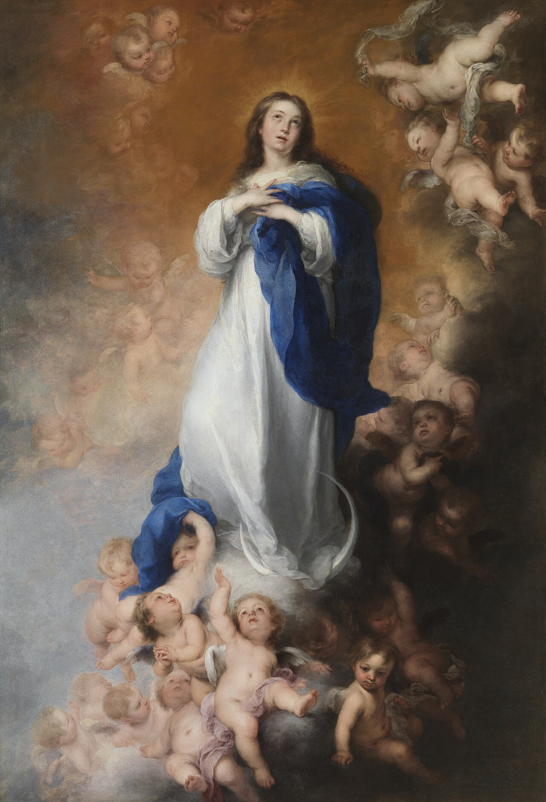
Maria, de Onbevlekte Ontvangenis, omringd door engelen
Op weg naar het hart van de Vader
Of het ons bewust is of niet, wij zijn allen op weg naar het hart van de Vader. En de H. Augustinus spreekt ons uit het hart, wanneer hij op zijn bekeringsweg bidt: Onrustig is ons hart, totdat het rust vindt in U, o God!
Wanneer wij de bonte en veelvormige levensverhalen van de heiligen beschouwen, dan ontmoeten wij er die al van kindsbeen af hun plaats hebben gevonden aan het hart van de Hemelse Vader, en andere die pas na vele dwalingen of omwegen, zoals bijvoorbeeld de H. Paulus, het liefdevolle vaderhart en het ware geloof hebben ontdekt. En menig mensenkind dat over deze door doornen en distels bezaaide aarde wandelt, vindt pas in zijn laatste levensuur thuis bij het reddende anker van het goddelijke vaderhart.
Nu stelt zich de beslissende vraag: Hoe vinden wij de weg naar het hart van de Vader, of beter, hoe vindt de Vader de weg naar ons hart?
Hierop geeft Jezus in het evangelie een heel duidelijk antwoord, dat voor elk kind begrijpelijk is: Niemand komt tot de Vader tenzij door Mij! (Joh 14,6)
En verder verklaart de Heiland: Als iemand Mij liefheeft, zal hij mijn woord onderhouden, mijn Vader zal hem liefhebben en Wij zullen tot hem komen en verblijf bij hem nemen. (Joh 14,23)
Daarmee wil Jezus zeggen, dat God Zelf op weg gaat naar ons, wanneer wij ons maar van ganser harte naar Hem verlangen, Hem liefhebben en onze wil met de Zijne verenigen.
Zo bouwen wij Hem als het ware een gouden hemelladder, waarlangs Hij in ons arme mensenhart kan afdalen, om er de troon van Zijn heerlijkheid op te richten.
Want de glorie van God is de levende mens, zegt de H. Ireneüs.
Het mooiste voorbeeld op deze weg van de vereniging met God is ons de allerzaligste Maagd Maria, die door haar grote liefde en verlangen de Verlosser in haar maagdelijke schoot heeft doen neerdalen.
Tegelijk is de Moeder Gods ook de grote middelares van de genaden, die ons naar haar geliefde Zoon leidt. Want door Maria komen wij tot Jezus, en door Jezus, die Zich voor ons tot brug heeft gemaakt, tot de Hemelse Vader.1
1 Omdat de wereld door de zonde doornen en lijden heeft voortgebracht en deze stroom voortbruist als een stormachtige zee, heb Ik jullie de brug gegeven, opdat jullie niet verdrinken. (…) Maar dat Mijn Zoon Zich voor jullie tot brug heeft gemaakt, is niet genoeg om het leven te verkrijgen – jullie moeten ook deze weg over de brug volgen. (Uit: Der Dialog, Caterina von Siena, Ein Gespräch mit Gott über Seine Vorsehung, Kleinhain 2017, blz. 52–53, 100)
O Immaculata, wanneer zult Gij eindelijk heersen in de harten van allen en van ieder afzonderlijk? Wanneer zullen eindelijk alle bewoners van de aarde U als Moeder en de Hemelse Vader als Vader erkennen? H. Maximiliaan M. Kolbe
Maagd met de sterrenkroon,
reinste Maagd, gegroet.
Zie neer van de genadetroon,
daar waar onze tranen vloeien.
Zie neer uit Uw vreugde,
waar Gij tussen engelen gaat
en met onbevlekt gewaad
bij de troon van de Vader staat.
Bid daar voor Uw kinderen
bij de genadetroon van de Vader,
en verzoen ons arme zondaars
daar met Jezus, Uw Zoon.
Rein te zijn en rein te leven,
geef ons, reinste, Uw zin.
Help ons naar de deugd te streven,
leid ons naar de hemel heen.
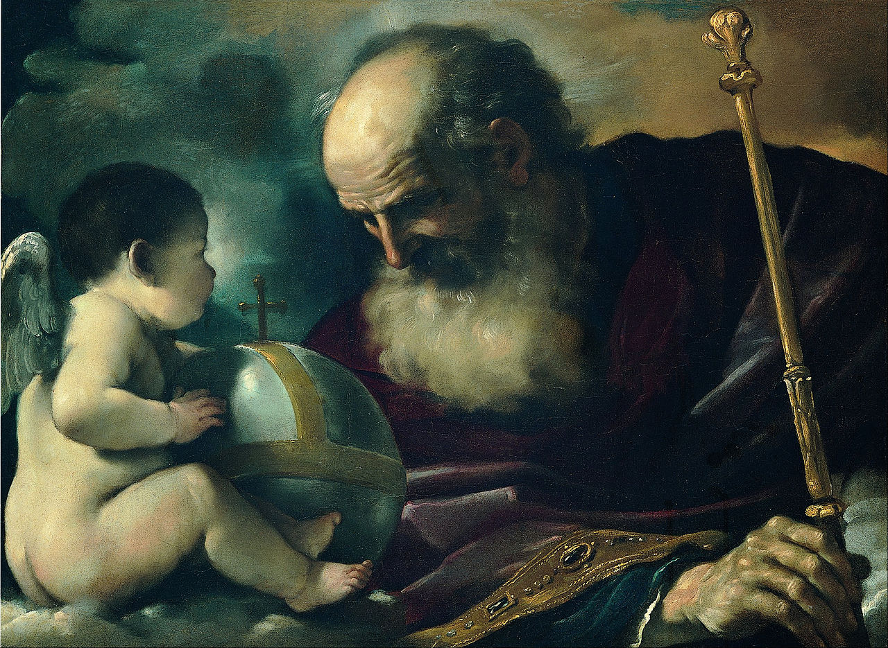
God de Vader met een engel (Guercino)
De praktijk van de Hemelse Vader
Toen in een schoolklas de vraag werd gesteld: Waar woont de lieve God?, meldde zich een klein meisje, de dochter van een arts, en verklaarde heel vastberaden, aan haar eigen papa denkend: De lieve God, onze Hemelse Vader, woont in de hemel, maar Zijn praktijk heeft Hij op aarde. Dit kleine meisje heeft werkelijk de spijker op de kop geslagen, want sinds de zondeval is onze aarde veranderd in een reusachtig ziekenhuis.
Hoe troostrijk is het te weten dat onder al die door de erfzonde aangestoken „patiënten” de goddelijke arts zelf leeft en werkt, om Zijn zwaar gewonde kinderen met de meest uitgelezen en kostbaarste „behandelingen” voor het eeuwige leven te genezen en naar huis te halen. Met alles wat ons dit aardse leven aan schoons en vreugdevols schenkt, maar ook met wat zwaar is en op de proef stelt, past de goddelijke hoofdarts Zijn bijzondere therapieën toe; door Zijn goedertieren voorzienigheid, die ons op elk ogenblik liefdevol omvat, reikt Hij ons de beste heils- en heiligingsmiddelen voor lichaam en ziel aan.
De belangrijkste instelling in dit grote ziekenhuis van de wereld is de heilige katholieke Kerk, die onze Heer Jezus Christus zelf heeft gesticht en aan wie Hij al Zijn verlossingsverdiensten heeft toevertrouwd.
Zij is als een nieuwe hof van Eden, waarin de borrelende bron van de heilige sacramenten zich in een zevenvoudige genadestroom over de hele wereld uitgiet. Wie uit deze goddelijke bron ijverig put, ontvangt overvloedige genade om de uitdagingen van het dagelijks leven goed te doorstaan en ook de aanvechtingen van de duivel, wiens onbedwingbare haat en nijd de liefde tussen God en de mens niet kan verdragen, zegevierend te overwinnen.2
Met tedere herdersorg sprak God de Vader eens tot de H. Catharina van Siena:
Blijft als schaapjes in de tuin van de heilige Kerk, weidt hier en brengt Mij een heilig verlangen en voortdurend gebed voor haar aan, want Ik wil Mij over de hele wereld ontfermen. Verwijdert jullie niet van deze weide, noch vanwege enig onrecht dat jullie is aangedaan, noch omdat het jullie goed gaat, want Ik wil niet dat jullie het hoofd verheffen, noch in ongeduld, noch in ongeordende vreugde. Span jullie veeleer nederig in voor Mijn eer, voor het heil van de zielen en voor de vernieuwing van de heilige Kerk. Dat zal Mij een teken zijn dat jullie, jij en de anderen, Mij in waarheid liefhebben.3 De Hemelse Vader tot de H. Catharina van Siena
2 Zie 1 Petr 5,8-9.
3 Der Dialog, blz. 359.
God wil de zielen tot heiligheid leiden. Daarom laat Hij de menselijke samenleving bestaan, ondanks de worm die aan haar knaagt door zoveel zielen die Zijn naam lasteren en Zijn geboden minachten. In Zijn goedertieren voorzienigheid leidt Hij voor allen die Hem liefhebben en Hem vertrouwen, zelfs het kwaad dat in de wereld gebeurt, ten goede. In de hele wereld laat Hij geen gebeurtenis toe en duldt Hij geen kwaad, zonder dat daardoor de voortgang van de zielen wordt bevorderd.
God zorgt voor Zijn prachtig gebouwde wereld, en zonder moeite kan Hij duizend andere, machtigere en mooiere bouwen. Maar wat Zijn gedachten veel meer bezighoudt, wat Zijn hart vooral raakt en de hemel vreugdevol beweegt, dat zijn de zielen, dat is de bewaarde of herwonnen onschuld, een daad van liefde, het besluit van een ziel om zich geheel aan de Heer te schenken, een zucht van verlangen naar Zijn hart, een gebed. Wanneer dit verlangen van de Hemelse Vader in ons hart een liefdevol antwoord vindt en de dorst naar Zijn eer en de redding van de zielen ons leven steeds meer zin en doel geeft, dan hebben wij de schoonste en diepste grond tot ware vreugde. Want door deze gezindheid wandelen wij als het ware in de voetsporen van Jezus, voor wie de eer van de Vader en het heil van de zielen de hartslag van Zijn hele godmenselijke leven waren.4
En jullie, die voor Mijn eer zullen werken en zich ervoor zullen inspannen dat Ik erkend, geëerd en bemind word: Ik verzeker jullie dat jullie loon groot zal zijn, want Ik waardeer alles, ook jullie kleinste inzet, en Ik vergeld het jullie honderdvoudig in de eeuwigheid. Woorden van de Goddelijke Vader aan Moeder Eugenia
4 Zie Joh 4,32-34: Mijn spijs is, de wil te doen van Hem die Mij gezonden heeft. De wil van de Vader echter is het heil van de mensen, de redding van de wereld. Aan deze zorg voor het heil mee te werken door gebed en offer, noemt de H. Catharina van Siena zielen eten of zielen verslinden … Dat betekent dat de zorg voor het heil van de naaste tegelijk de eigen ziel ten goede komt en haar voedt, omdat deze zorg diep beantwoordt aan de goddelijke wil van de Vader. (Ibid. blz. 171)
Het boompje van de Hemelse Vader
Om ons opnieuw aan de grote heilswaarheden van het katholieke geloof te herinneren, schonk de Hemelse Vader ons in het jaar 1932 een heel bijzondere boodschap door Moeder Eugenia Elisabetta Ravasio (1907–1990), aan wie Hij Zijn grote verlangen meedeelde, om door alle mensen erkend, geëerd en bemind te worden.
Maar wie was Moeder Eugenia, die de Hemelse Vader liefdevol „Mijn lievelingsdochter, Mijn Boompje” placht te noemen?
De uit Noord-Italië afkomstige Moeder Eugenia was missiezuster in de congregatie Onze Lieve Vrouw van de Apostelen en leefde in heroïsche toewijding voor de eenheid van alle mensen als kinderen Gods in Christus en tot eer van de Hemelse Vader.
In deze bedoeling stichtte zij in Rome de „Unitas in Christo ad Patrem”, die tot op vandaag haar charisma voortdraagt.
Als generaal-overste opende zij talrijke noviciaten, centra met kapel, scholen en ziekenafdelingen in Europa. Zij ontdekte het eerste geneesmiddel tegen lepra en verwezenlijkte het idee van een stad voor leprapatiënten, die zij tussen 1938 en 1941 in Azopté (Ivoorkust) liet bouwen.
Op 1 juli en op 12 augustus 1932 ontving zij de boodschap van de Vader, die haar in zichtbare gestalte verscheen om haar de opdracht toe te vertrouwen de mensen voor te bereiden om de Vader, die in hen en met hen Zijn rijk van liefde wil stichten, in hun hart op te nemen.
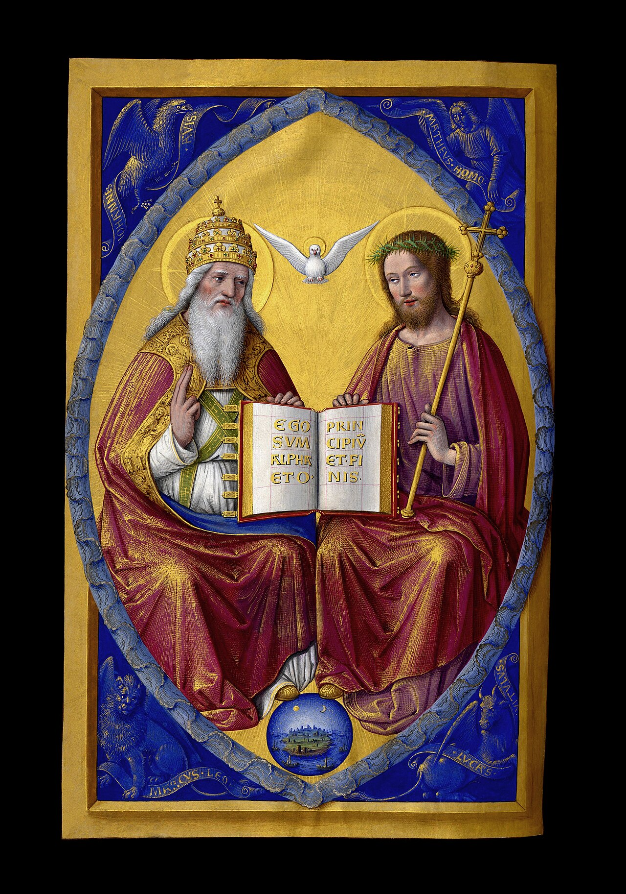
De Hemelse Vader en Christus, Alfa en Omega (miniatuur)
De graankorrel die in de aarde valt
In het jaar 1947 werd Moeder Eugenia met een uitzonderlijke vergunning, vanwege haar buitengewone liefde en ongelooflijke leidinggevende gaven, voor een derde ambtstermijn tot generaal-overste gekozen. Maar God liet toe dat een zuster uit de eigen rangen haar bij het Heilig Officie aanklaagde en belasterde. Daarop moest de begenadigde overste haar ambt neerleggen. Men verbood haar over de boodschap te spreken, en uit alle missiehuizen moesten de beelden van de Goddelijke Vader worden verwijderd. Innerlijk besefte Moeder Eugenia dat men ook weldra van haar zou eisen haar instituut te verlaten, wat na een lange reeks van lasteringen en beschuldigingen in 1956 inderdaad gebeurde. Tegelijk gaf God haar echter te verstaan dat zij een nieuwe congregatie zou stichten. In de volgende jaren worstelde Moeder Eugenia om duidelijkheid over de manier waarop zij deze opdracht moest vervullen. Het waren meerdere jaren van innerlijke duisternis en van veel uiterlijk lijden. Pas in 1980 kreeg zij de kerkelijke toestemming om de missionarissen „Unitas in Christo ad Patrem” te stichten. En in 1989 gaf de generaal-vicaris van de Vaticaanstad, Petrus Canisius van Lierde OSB, het imprimatur voor de boodschap.
Moeder Eugenia had God alles gegeven, en zo gaf Hij haar ook alles waarom zij Hem vroeg. Daarom wendden velen zich in vertrouwen op haar voorbiddende macht tot haar. Zo kwam eens ook een verlamd meisje naar haar toe. Moeder Eugenia beloofde haar: Wees gerust, ik neem je lijden op mij. Je bent nog jong en moet nog veel goeds doen. Korte tijd later getuigden meerdere personen, hoe de zieke zich oprichtte en zonder enige hulp kon lopen. Moeder Eugenia daarentegen bracht de laatste jaren van haar leven in een rolstoel door. Zo gaf zij haar leven als offer van genoegdoening zonder voorbehoud in de handen van de Vader, opdat zich zo spoedig mogelijk zou verwezenlijken wat Hij haar in 1947 liet inzien:
Op een dag zal de zaadkorrel ontkiemen en zijn vrucht over de hele wereld en in ieder hart doen stralen. En allen, van de Heilige Vader tot de laatste gelovige, zullen spreken van de Goddelijke Vader, die het Alfa en Omega van ons leven en van onze eenheid in onszelf, in het gezin en in de Kerk is en voor altijd zal zijn. De Hemelse Vader aan Moeder Eugenia, 1947
Op 10 augustus 1990 stierf de profetes van de Goddelijke Vader op de leeftijd van 83 jaar in de reuk van heiligheid.
Ik moet de glimlach van de Vader zijn. De tranen die iets waard zijn, zijn niet die welke naar beneden vallen, maar die welke opstijgen.5 Moeder Eugenia E. Ravasio
5 Moeder Eugenia spreekt hier over het uit liefde opgeofferde lijden, dat overrijke vruchten draagt wanneer het met het lijden van de Verlosser wordt verenigd.
De kerkelijke toetsing
Toen paus Pius XII over Moeder Eugenia hoorde, zond hij pater Girard Matthieu, een priester van zijn vertrouwen, naar haar toe, om informatie uit de eerste hand te verkrijgen. Terwijl de pater op Moeder Eugenia wachtte, zag hij haar van het einde van de gang op zich afkomen: een halve meter boven de grond zwevend en omgeven door een stralend licht dat van haar uitging. Dit wonder verrichtte God als bewijs van de echtheid van Zijn openbaringen aan deze uitverkoren ziel.
Na een toetsingsperiode van tien jaar onder leiding van bisschop Alexandre Caillot (1861–1957) werd de boodschap van de Hemelse Vader, die Moeder Eugenia in het Latijn ontving, als authentiek verklaard.6
6 Deze zeer ervaren en ijverige herder van zielen had uitdrukkelijk een commissie ingesteld om de boodschap en haar ontvangster te onderzoeken. Tien jaar lang werkten meerdere theologen aan deze opdracht, waarbij het niet alleen om de inhoud van de boodschap ging, maar vooral ook om het feit dat de Goddelijke Vader Zich aan Moeder Eugenia zichtbaar als Persoon toonde. In januari 1934 vonden de theologen bij Thomas van Aquino het antwoord op hun eigen bezwaren. Het antwoord van de grote kerkleraar op het onderscheid tussen „verschijning” en „zending” was overtuigend. Het overwon de hindernis die het hele onderzoek verlamde. Het feit dat de Goddelijke Vader de boodschap in het Latijn gaf, terwijl Moeder Eugenia vanwege haar slechts driejarige schoolopleiding geen Latijn sprak, was voor bisschop Alexandre Caillot een verder sterk bewijs van echtheid.
Naar beste weten en geweten en in het volle bewustzijn van mijn verantwoordelijkheid tegenover de Kerk verklaar ik: Alleen een bovennatuurlijk en goddelijk ingrijpen lijkt mij in staat het geheel van de feiten logisch en bevredigend te verklaren. Ongeacht alle overige omstandigheden lijkt mij dit wezenlijke feit vol adel, verhevenheid en bovennatuurlijke vruchtbaarheid. Een nederige religieuze heeft de zielen herinnerd aan de ware godsdienst, zoals Jezus die leerde en zoals de Kerk die in haar liturgie heeft vastgelegd. (…) Ik geloof dat hier de hand van God aan het werk is, en na tien jaar van onderzoek, overweging en gebed prijs ik de Vader, die Zich heeft gewaardigd mijn bisdom uit te kiezen als plaats van zo aangrijpende betoning van Zijn liefde. + Alexandre Caillot, bisschop van Grenoble
Ik prijs U, Vader, Heer van hemel en aarde, omdat Gij deze dingen verborgen gehouden hebt voor wijzen en verstandigen, maar ze hebt geopenbaard aan kleinen. Mt 11,25
De Vader spreekt tot Zijn kinderen
De reden van Zijn komst
- Ik leg Mijn kroon en Mijn hele heerlijkheid af, om de nederige houding van een gewoon mens aan te nemen!
- Ik kom om de overmatige vrees die Mijn schepselen voor Mij hebben, definitief te verdrijven. Ik wil hun doen begrijpen dat het Mijn vreugde is, door Mijn zonen en dochters, dat wil zeggen door de gehele tegenwoordige en toekomstige mensheid, erkend en bemind te worden.
- Mijn aanwezigheid onder jullie is als de zon op de aardse wereld. Wanneer jullie bereid zijn Mij op te nemen, zal Ik jullie zeer nabij komen. Ik zal in jullie wonen, jullie verlichten en door Mijn oneindige liefde verwarmen.
- O, hoe is Mijn vaderliefde door de mensen vergeten! En toch heb Ik jullie met zo grote tederheid lief.
- Wanneer jullie Mij liefhebben en Mij vol vertrouwen bij deze liefelijke naam Vader noemen, beginnen jullie reeds hier op aarde die liefde en dat vertrouwen te leven, die in de eeuwigheid jullie hele geluk zullen uitmaken.
Ik heb u lief, zegt Jahwe. Mal 1,1
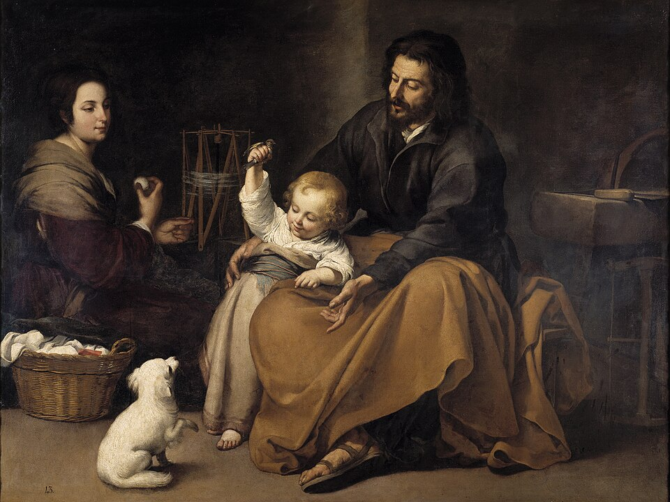
De Heilige Familie met het lam (schilderij van Raffaël)
De Vader van de gezinnen
- Wanneer de gezinnen Mij eren en als hun Vader liefhebben, zal Ik hun vrede zenden en daarmee Mijn zorg.
- Hoe groot zou Mijn vreugde zijn, wanneer Ik zou zien hoe ouders hun kinderen leren, Mij vaak bij Mijn naam te noemen, Mij Vader te roepen, want dat ben Ik in werkelijkheid. Hoezeer verlang Ik ernaar te beleven dat in deze jonge zielen vertrouwen en liefde voor Mij ontstaat, de liefde van de kinderen voor de Vader! Ik heb alles voor jullie gedaan, zullen jullie dat nu voor Mij doen?
- Ik wil in elk gezin verblijven, zoals in Mijn huis, opdat allen met de grootste zekerheid kunnen zeggen: Wij hebben een Vader, die oneindig goed, oneindig rijk en onvoorstelbaar barmhartig is. Hij denkt aan ons en is ons nabij, Hij waakt over ons, Hij beschermt ons zelf en zal ons alles geven wat ons ontbreekt, wanneer wij Hem daarom vragen. Al Zijn rijkdommen behoren ons toe, wij zullen alles hebben wat wij nodig hebben.
Hoe groot is de liefde die de Vader ons betoond heeft! Wij worden kinderen van God genoemd, en we zijn het ook. 1 Joh 3,1
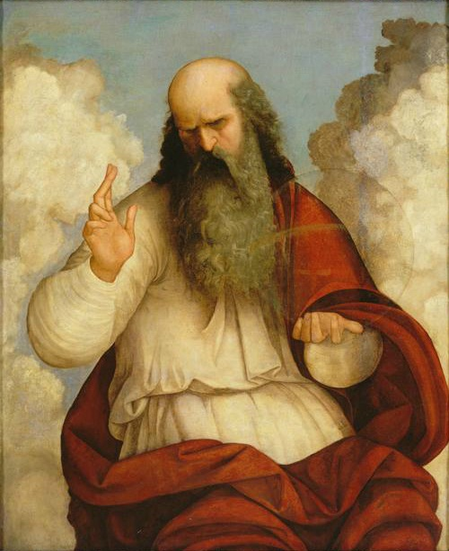
De Hemelse Vader (schilderij)
De Vader van alle mensen
- Wanneer iemand Mij liefheeft en zich aan Mij toevertrouwt, zal Ik hem bij al zijn noden, al zijn verwarring en lijden en bij elk verdriet een straal van vrede zenden, vooral wanneer hij Mij aanroept en Mij als zijn Vader liefheeft.
- Wanneer de arbeiders, de industriëlen en de verschillende andere ambachtslieden Mij aanroepen en eren, zal Ik hun Mijn vrede en Mijn kracht schenken en Mij aan hen tonen als goede en barmhartige Vader.
De grootste Goede Bedoeling
Hemelse Vader, ik offer U alles op wat ik ook zal doen, offeren en lijden, verenigd met de verdiensten van Jezus en Maria, in naam van alle zielen en voor alle zielen van de hele heilige Kerk, met de wil daardoor te werken en voort te werken in de eeuwigheid. Amen.7
7 Wanneer u deze woorden bidt, wekt u op de volmaaktste wijze de Goede Bedoeling. Ook nemen de mensen die zo bidden deel aan de gemeenschap der heiligen, of liever, zij treden telkens wanneer zij deze woorden gebruiken als het ware opnieuw nog nauwer in de gemeenschap der heiligen in, niet alleen van de heiligen van de hemel, maar van alle leden van de drievoudige Kerk. Daarom kan niemand op een voortreffelijkere manier de nieuwe dag met God beginnen. (Uit: Aszese und Mystik, van Prof. Albert Drexel, Jestetten 1977)
- Wanneer Ik in iedere christelijke gemeenschap word aangeroepen en geëerd, zal Ik Mijn vrede schenken en Mij tonen als de liefdevolste Vader, en door Mijn macht zal Ik de zielen het eeuwige heil verzekeren.
- Wanneer de hele mensheid Mij aanroept en eert, zal Ik haar de Geest van de vrede zenden, die als gezegende dauw op haar zal neerdalen.

Terugkeer van de verloren zoon naar de barmhartige vader
De barmhartige Vader
- Wanneer alle volken Mij op dezelfde wijze aanroepen en eren, zal er geen tweedracht en ook geen oorlogen meer zijn, want Ik ben de God van de vrede, en waar Ik ben, zal geen oorlog zijn.
Zalig zij die U liefhebben; zij zullen zich verheugen over de vrede die Gij schenkt. Tob 13,15
- Nadert Mijn bron, die altijd uit Mijn vaderlijke hartdiepten ontspringt (…) en stort jullie in de oceaan van Mijn liefde, om alleen nog in Mij te leven. Wanneer jullie aan deze bron willen drinken, doorgrondt Mij, leert, opdat jullie Mij leren kennen; en zodra jullie Mij kennen, stort jullie in de oceaan van Mijn liefde, door jullie aan Mij toe te vertrouwen met een vertrouwen dat jullie verandert en waaraan Ik niet kan weerstaan, zodat Ik jullie fouten zal vergeven en jullie met de grootste genaden zal vervullen.8
8 Moeder Eugenia merkt hierbij op: Onze Vader heeft mij in een vertrouwelijk gesprek gezegd: „De bron staat voor Mijn erkend worden, en de oceaan staat voor Mijn liefde en jullie vertrouwen.”
Ik ben gekomen om jullie de ware vrijheid te laten proeven, de vrijheid waaruit ware gelukzaligheid ontspringt: alle vreugden van deze aarde zijn niets vergeleken bij dit geluk.
Jullie, Mijn kinderen, die buiten de katholieke Kerk staan, jullie moeten weten dat Mijn vaderlijke liefde jullie niet uitsluit. Ik wend Mij tot jullie met Mijn tedere roep, want ook jullie zijn Mijn kinderen. Ook al zijn jullie tot op heden bezweken voor de verlokkingen waarmee de duivel jullie lokte, erken dan dat hij jullie heeft bedrogen; kom tot Mij, jullie Vader, en Ik zal jullie met vreugde en liefde ontvangen!
En jullie, Mijn kinderen, die in de duisternis leven omdat jullie jullie geloof hebben verloren: heft jullie blik op, en jullie zullen heldere stralen zien die jullie verlichten. Ik ben de zon die op jullie schijnt, die warm is en jullie verwarmt. Ziet, en jullie zullen erkennen dat Ik jullie Schepper ben, jullie Vader, jullie enige God.
Komt, komt met vertrouwen tot Mij. (…) Jullie zonden zijn voor Mij als ijzer, jullie daden uit liefde als goud. (…) Dat betekent dat met een beetje liefde onmetelijk grote misdaden worden opgeheven.
Allen die Mij van harte met de naam Vader noemen, al is het maar één enkele keer, zullen niet verloren gaan; nee, hun is het eeuwige leven in de gemeenschap der uitverkorenen verzekerd.
Heer, Gij zijt mijn Vader, mijn God, mijn reddende held. Sir 51,10
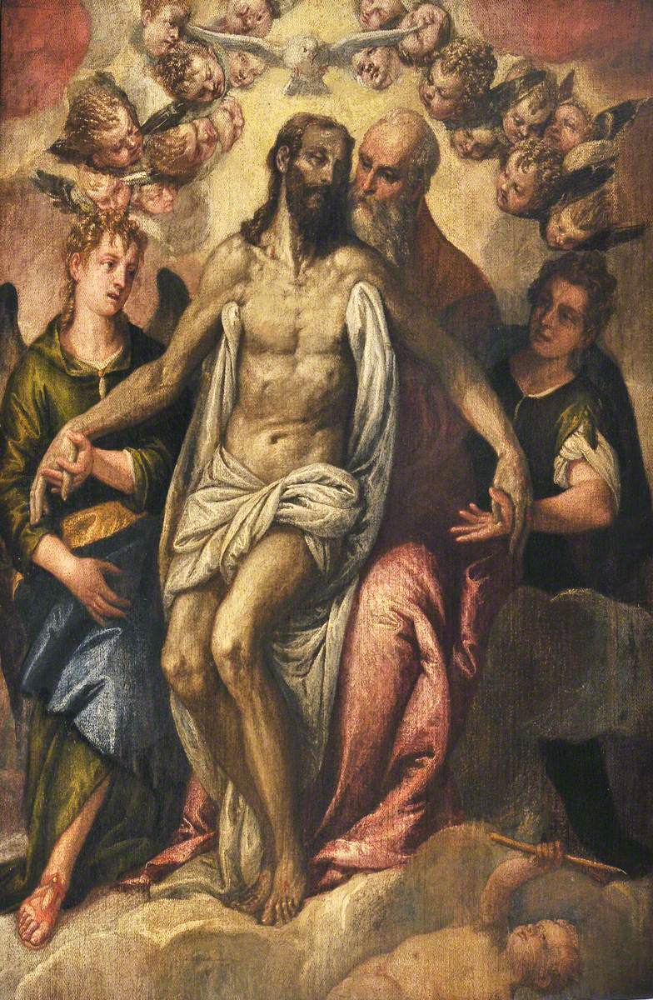
De Vader neemt Zijn geofferde Zoon in Zijn armen (genadestoel)
De wegen van de Vader
Ik kom op twee wegen tot jullie: door het kruis en de Eucharistie.
Het kruis is Mijn weg om naar Mijn kinderen af te dalen, want door het kruis heb Ik jullie door Mijn Zoon verlost. Voor jullie is het kruis de weg om naar Mijn Zoon op te stijgen, en door Mijn Zoon naar Mij. (…)
In de Eucharistie verblijf Ik onder jullie als een vader in zijn gezin. Ik wilde dat Mijn Zoon de Eucharistie instelde, om uit elk tabernakel een vat van Mijn genaden, Mijn rijkdommen en Mijn liefde te maken, zodat Ik die aan de mensen, Mijn kinderen, kan uitdelen.
Door deze beide wegen laat Ik onophoudelijk Mijn kracht en Mijn oneindige barmhartigheid naar de mensen stromen.
Ik kan de zwakheid van Mijn kinderen begrijpen. Daarom heb Ik Mijn Zoon gevraagd hun middelen te schenken om zich na hun val in de zonde weer op te richten. Deze middelen zullen hun helpen zich van de zonde te reinigen, zodat zij weer kinderen van Mijn liefde worden. Deze middelen zijn vooral de zeven sacramenten, en een zeer belangrijk middel is vooral het kruis, want het zal jullie ondanks jullie val in de zonde redden; het is het bloed van Mijn Zoon, dat zich op elk ogenblik over jullie uitstort, mits jullie het aanvaarden, en wel zowel door het sacrament van de boete als door het heilig offer van de Mis.9
9 De viering van de H. Mis is bron en hoogtepunt van het hele christelijke leven, de hoogste eredienst, de geheimzinnige vergegenwoordiging van het kruisoffer van Jezus Christus. In de gehoorzame overgave van Jezus wordt de Vader alle heerlijkheid en eer ten deel. Tegelijk opent de liefde van Christus voor elke mens een weg, die leidt naar het hart van de Vader. Ons hele wezen, onze menselijke zwakheid, onze zorgen en noden alsook de schuld van alle mensen leggen wij in het gebeuren van de consecratie in de H. Mis. Want in het gebroken lichaam en in het vergoten bloed van Christus vinden wij genezing en genoegdoening voor de zonden van de hele wereld. De begenadigde Steyler missionaris broeder Kostka Wasel (1868–1946) mocht meer dan 40 jaar in visioenen het mysterie van het H. Misoffer meebeleven. Bijzonder aangrijpend beschrijft hij, hoe de Hemelse Vader op het ogenblik van de consecratie Zijn geofferde Zoon in Zijn armen neemt. In Zijn zo geliefde Zoon sluit de Vader echter ook ons, Zijn kinderen, in Zijn armen, en wij mogen er zeker van zijn dat dit het grootste en verhevenste ogenblik is om van onze Hemelse Vader elke genade en de diepe persoonlijke genezing van al onze wonden af te smeken, want nu staat de genadetroon open voor allen die met vertrouwen om hulp smeken. (Zie Das heilige Messopfer in Schauungen erlebt, uitg. door Klemens Kiser, Lauerz 1996, blz. 69–128)
Mijn kinderen, Ik zal niet de hele grootte van Mijn oneindige liefde uitspreken, want het is genoeg voor jullie om de Heilige Schrift open te slaan en het kruis, de tabernakel en het Allerheiligste Altaarsacrament te beschouwen, opdat jullie kunnen begrijpen tot welk punt Ik jullie heb liefgehad!
Ontvangt het Lichaam en drinkt het Bloed van Jezus Christus, zo verschrikkelijk beledigd door ondankbare mensen. Doet genoegdoening voor hun zonden en troost uw God! Woorden van de engel aan de Fatimakinderen 1916
Hoe mooi is het, hoe groot is het, God te kennen, Hem te beminnen, Hem te dienen! Niets meer dan dat hebben wij in deze wereld te doen. Alles wat wij verder nog doen, is verloren tijd. H. Johannes Maria Vianney
Zozeer immers heeft God de wereld liefgehad, dat Hij zijn eniggeboren Zoon heeft gegeven, opdat al wie in Hem gelooft niet verloren zal gaan, maar eeuwig leven zal hebben. Joh 3,16
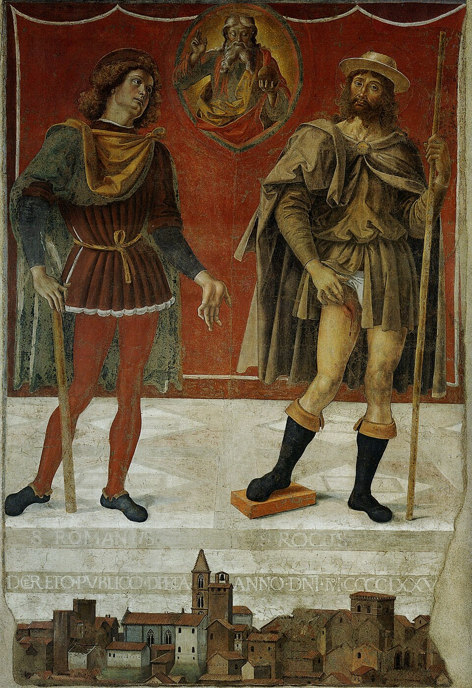
De Hemelse Vader, omringd door heiligen (fresco van Perugino)
Een feest voor de Hemelse Vader
Een dag, of ten minste een zondag, moet Mij gewijd zijn, waarop Ik op bijzondere wijze word geëerd onder de naam Vader van de hele mensheid.10 Voor dit feest wens Ik een eigen misformulier en een eigen proprium voor het getijdengebed. Het is niet moeilijk de teksten daarvoor in de H. Schrift te vinden. Wanneer jullie er de voorkeur aan geven Mij deze bijzondere verering op een zondag te bewijzen, kies Ik de eerste zondag van augustus; wanneer jullie een weekdag nemen, geef Ik altijd de voorkeur aan de 7 augustus.
10 Het voorwerp van de opdracht die aan Moeder Eugenia is toevertrouwd, is zeer precies en vanuit doctrinair standpunt gezien, naar het mij voorkomt, ook wettig en gepast. De precieze zending is: de Vader bekend maken en eren, vooral de eis aan de Kerk tot invoering van een speciaal feest. Het onderzoek heeft uitgewezen dat een liturgisch feest ter ere van de Vader vrij goed te verenigen zou zijn met de gehele lijn van de katholieke eredienst en overeenkomt met de traditionele beweging van het katholieke gebed, het opstijgen tot de Vader door de Zoon in de Heilige Geest, zoals de eucharistische gebeden van de H. Mis en de liturgische aanbiedingen aan de Vader in het Heilig Offer dat bewijzen. Anderzijds is het vreemd dat er tot nu toe nog geen speciaal feest ter ere van de Vader bestaat: de Drievuldigheid wordt als zodanig geëerd, het Woord en de Heilige Geest worden in hun zending en in hun uiterlijke openbaringen geëerd, alleen de Vader heeft geen eigen feest dat de aandacht van het christelijke volk op Zijn persoon in bijzondere mate zou richten. (Bisschop Alexandre Caillot)
De hele clerus moet zich ervoor inzetten, deze verering tot ontplooiing te brengen; vooral moeten de geestelijken Mij aan de mensen bekendmaken als Degene die Ik ben en die Ik altijd voor hen zal zijn: namelijk de teerste en beminnelijkste van alle vaders.
Wanneer al die mensen die ver van onze katholieke Kerk staan, van deze Vader hoorden, die hen liefheeft en die hun Schepper en God is, wanneer jullie hun over deze Vader die hun het eeuwige leven wil schenken zouden vertellen, dan zou een groot deel van deze mensen tot deze Vader komen, ook de hardnekkigsten onder hen.
Hij onze Vader in alle eeuwigheid. Tob 13,4
Het beeld van de Hemelse Vader
Ik wens dat de clerus ervoor zorgt dat Mij in alle gezinnen en in de ziekenhuizen toegang wordt verleend, ook in de werkplaatsen en fabrieken, in de kazernes en in de vergaderzalen, waarin de ministers van de naties hun besluiten nemen, ja uiteindelijk overal waar Mijn schepselen verblijven, en al zou er maar één van hen daar zijn.
Het zichtbare teken van Mijn onzichtbare aanwezigheid moet een beeld zijn, dat laat zien dat Ik werkelijk daar en aanwezig ben. (…) Op deze wijze zullen alle Mijn kinderen als het ware onder de blik van hun tedere Vader leven. Ongetwijfeld ben Ik ook nu overal, maar Ik wil op een voor de zintuigen waarneembare wijze worden voorgesteld.
Bijzonder wens Ik in de priesterseminaries, de noviciaten, in de scholen en tehuizen te worden vereerd. Allen, van de kleinsten tot de groten, moeten Mij kunnen herkennen en Mij liefhebben als hun Vader, hun Schepper en hun Verlosser.11
11 Uittreksels uit de boodschap van de Hemelse Vader aan Moeder Eugenia E. Ravasio, Imprimatur: Petrus Canisius van Lierde, Vic. Generalis e Vic.Civit. Vaticanae, Roma, die 13 Martii 1989.
Gij mijn Vader, mijn God, mijn rots en mijn heil. Ps 89,27
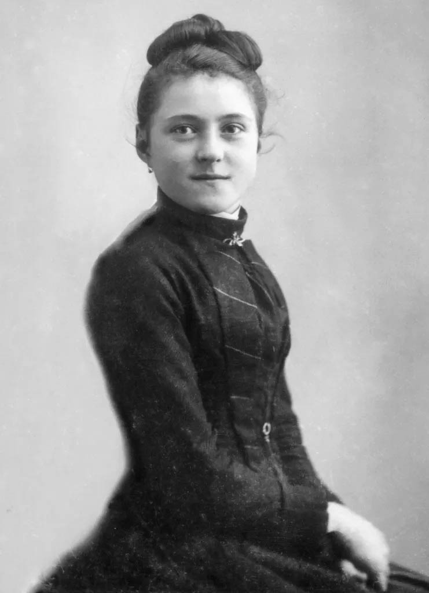
Portretfoto van de H. Theresia van het Kind Jezus als jong meisje (1885, vóór haar intrede in het klooster)
Heer, toon ons de Vader!
De H. Hilarius van Poitiers zegt dat het grote werk van Christus was, de Vader bekend te maken. In de Bergrede spreekt Jezus 17 keer over de Vader, in het hele Matteüsevangelie 47 keer, bij Johannes 115 keer, daarvan 43 keer in de afscheidsredes.
In dienst van dit grote werk van Christus staat ook de opdracht die Moeder Eugenia van de Hemelse Vader zelf heeft ontvangen: de mensen mee te delen hoe groot het verlangen van de Vader is, om door al Zijn schepselen erkend, bemind en geëerd te worden.
Jezus is één in wezen met de Vader, wiens goedheid en liefde Hij op de volmaaktste wijze weerspiegelt.
Wanneer wij willen weten of ons vaderbeeld zich in een goede richting beweegt, dan moeten wij ons alleen afvragen of wij in het leven en het handelen van Jezus de barmhartige liefde van de Hemelse Vader herkennen?
Zelfs de leerlingen van Jezus moesten stap voor stap de waarheid over het wezen van de Vader veroveren, wat zich niet in de laatste plaats uitdrukt in het smachtende verzoek van de H. apostel Filippus: Heer, toon ons de Vader! En Jezus antwoordt hem: Filippus, wie Mij ziet, ziet de Vader. (Joh 14,8-9)
En toen de leerlingen hun Meester zagen bidden, ontstond in hen het innige verlangen om op gelijke wijze tot de Vader te bidden. Uit dit verlangen komt hun bede voort: Heer, leer ons bidden! (Lk 11,1)
En Jezus leidt hen in het grote gebed des Heren in, dat tot op de huidige dag uit de harten van ontelbare christenen tot het hart van de Vader opstijgt.
In de voetsporen van de apostelen en de eerste christenen, die de klank van de stem van Jezus hoorden, Zijn gelaatsuitdrukking en lichaamshouding mochten zien wanneer Hij het Onze Vader bad, mogen wij opnieuw ontdekken, wat voor een teder, groot en boven alles verheven Vader wij hebben.
In deze zin zegt de H. Johannes Cassianus († 435): Het Onze Vader is een opzien tot God alleen, een groot vuur van liefde. De ziel smelt erin, verzinkt in de heilige liefde en onderhoudt zich met God als met de eigen Vader, zeer vertrouwelijk, in bijzondere, tedere kinderlijke liefde.
Toen de kleine H. Theresia van het Kind Jezus eens helemaal in haar gedachten verzonken met een naaiwerk bezig was, kwam haar zuster Celine en vroeg: Waaraan denkt u? En deze antwoordde: Ik mediteer over het Onze Vader. Het is zo mooi, de lieve God Vader te noemen! En in haar ogen glansden tranen.
Deze innige betrekking van de H. Theresia tot haar Hemelse Vader toont zich ook in een brief aan haar zuster Agnes, waarin zij schrijft: God is tederder dan een moeder!
En in een brief aan Moeder Marie de Gonzague schrijft zij: Soms, als ik geestelijk in zo’n grote dorheid ben dat ik onmogelijk een gedachte kan vinden die mij met de lieve God verenigt, bid ik heel langzaam een Onze Vader en daarna een weesgegroet. Dan vind ik die gebeden heerlijk, zij geven mijn ziel veel meer voedsel dan wanneer ik ze honderd keer vlug achter elkaar zou hebben gebeden.
Wij mogen er ons van bewust zijn dat wij ons in het eerbiedig bidden van het Onze Vader in de armen van de Hemelse Vader vluchten, die ons met Zijn alomvattende vaderlijke liefde en gezag beschermt tegen de aanvallen van het kwaad, zoals wij Hem aan het einde van het Onze Vader bidden: … verlos ons van het kwade. Zo heeft het kostbare gebed van de Heer ook een uitstekende exorcistische werking, zoals dat al door vele priesters die in de bevrijdingsbediening werkzaam zijn en door talrijke christenen werd bevestigd.12
12 Zie Maria, das Zeichen der Zeit, 3e kwartaal 2023.
En wanneer wij na het bidden van het Onze Vader ook de Moeder Gods met het Wees gegroet begroeten, dan zetten wij als het ware de kroon op deze genadevolle werking.
Wanneer ge bidt, zegt dan: Vader, Uw Naam worde geheiligd, Uw Rijk kome. Lk 11,2
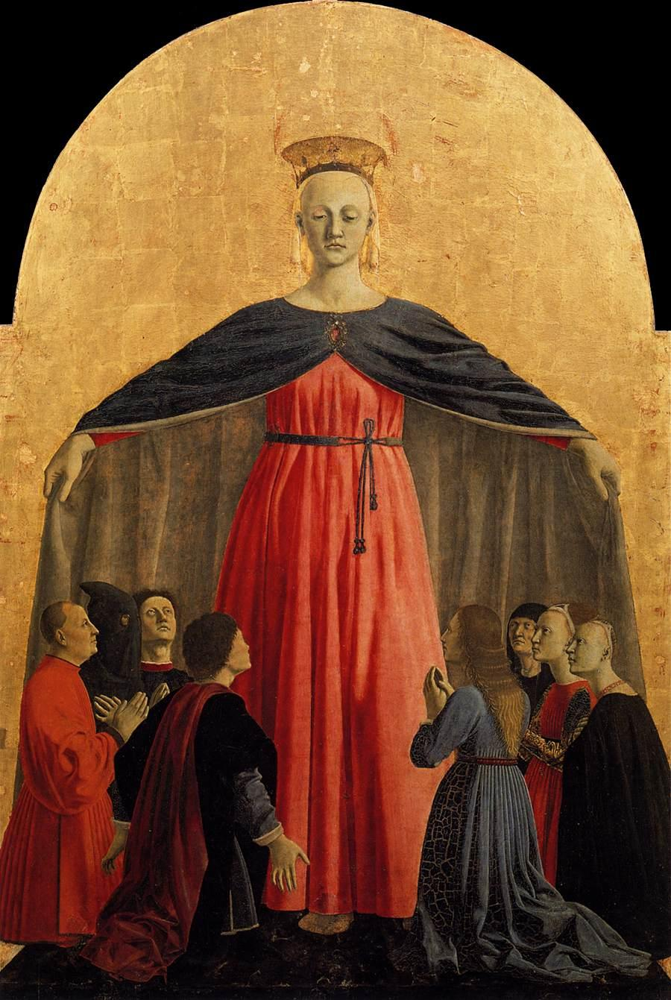
Maria, Beschermmantelmadonna (Piero della Francesca, Madonna della Misericordia)
Maria, de Koningin van de Eenheid
Samen met Jezus heeft Moeder Eugenia haar leven opgeofferd voor de eenheid van de zonen en dochters in het huis van de Vader. Hoe had zij dit beter kunnen doen dan met Maria, de Koningin van de Eenheid? Haar leven was getekend door de aanwezigheid van deze beminnelijke Moeder: zij was het die haar had geholpen de eerste stappen van haar leven te zetten. Naarmate zij groeide, merkte zij geleidelijk dat zij deze hand steeds steviger moest vasthouden om hindernissen te overwinnen en veilig op de weg van de Heilige Geest te kunnen gaan. Op een dag was het haar alsof zij deze hand weer zo levend aanraakte, en zij voelde zich in een licht geleid, zo onmetelijk als zij het nog nooit eerder had gezien, en zij vond zich als in een nieuwe wereld: de hemelse Moeder leidde haar heel zachtjes en leerde haar de Vader, de Zoon en de Heilige Geest te erkennen. Onbegrijpelijk geheim …!
De heiligste Moeder zei tot haar: Zie, u behoort tot onze familie. Moeder Eugenia wist niet meer of zij in de hemel of op aarde was. Dit inzicht heeft zich diep in haar ziel gegrift. Nu wist zij hoe men tot deze eenheid kon komen. Wat het ook kost:
Moeder van Jezus en mijn liefste Moeder, ik leg heel mijn leven in Uw handen door altijd en in alles de Goddelijke Wil van de Vader te aanbidden. Draag het aan Jezus op tot verheerlijking van de Vader en in de liefde van de Heilige Geest, opdat allen tot het huis van de Vader komen. Allen! Ik ben tot elk offer bereid, opdat niemand ontbreke. Help mij, mijn Moeder, één met Jezus als waar kind van de Vader te leven in volkomen overgave aan het Evangelie. Koningin van de Eenheid, bid voor ons! Moeder Eugenia E. Ravasio
Heilige Vader, bewaar in uw Naam hen die Gij Mij gegeven hebt, opdat zij één mogen zijn zoals Wij. Joh 17,11
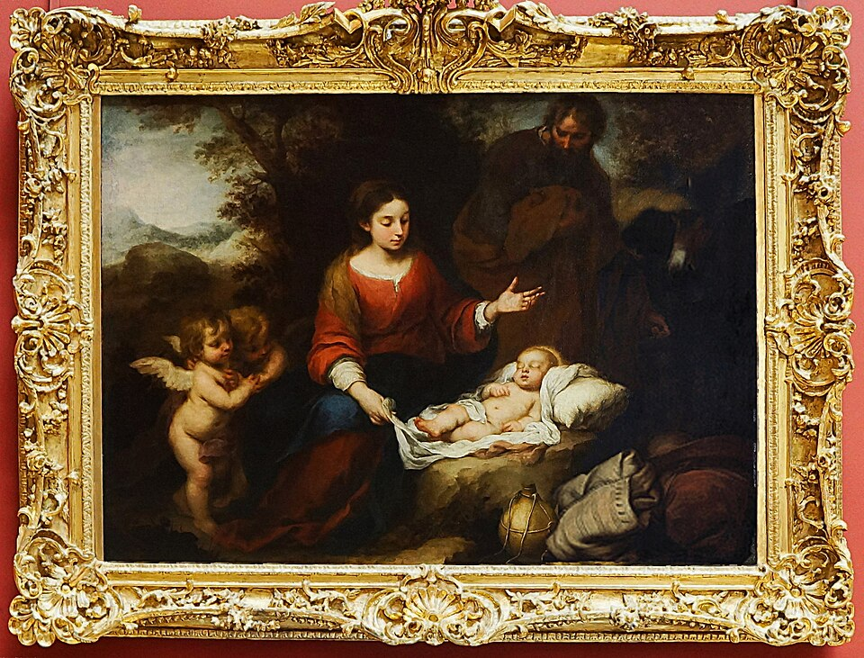
De Heilige Familie op de vlucht naar Egypte (schilderij van Murillo)
Het vaderschap van de H. Jozef
Toen de Hemelse Vader Zijn Zoon in de wereld zond om ons te redden en ons tot Zijn kinderen te maken, koos Hij de H. Jozef uit, om Zijn goddelijk vaderschap op aarde te vertegenwoordigen. Het volkomen vertrouwen dat Jezus Zijn pleegvader toedroeg, is voor ons allen een stralend voorbeeld. Jezus heeft Zijn aardse vader liefgehad, gehoorzaamd en nagevolgd, en telkens wanneer Jezus de H. Jozef zag, hem hoorde spreken, hem zag werken of zijn kuise liefde voor Maria beleefde, ervoer de mensheid van Jezus een volmaakt spiegelbeeld van de Vader in de hemel.
Ook wij mogen hem ons volle vertrouwen schenken en ons als zijn kinderen beschouwen. Wanneer Jezus volgens de plannen van de Vader de H. Jozef nodig had, hoeveel te meer hebben ook wij hem nodig, deze grote schutspatroon van de H. Kerk. Wanneer onze gezinsvaders de H. Jozef tot voorbeeld nemen, dan zal deze grote heilige hun helpen hun vaderschap geheel naar het hart van de Hemelse Vader te leven.
Zo leggen zij voor hun kinderen een dragend levensfundament, dat voor hun toekomst een bron van goddelijke zegen wordt.13
13 Zie Weihe an den hl. Josef van Donald H. Calloway, MIC, Kislegg 2021, blz. 36. Imprimatur: Most Rev. Jeffrey Monforton, DD, bisschop van Steubenville, Ohio, 22 oktober 2019.
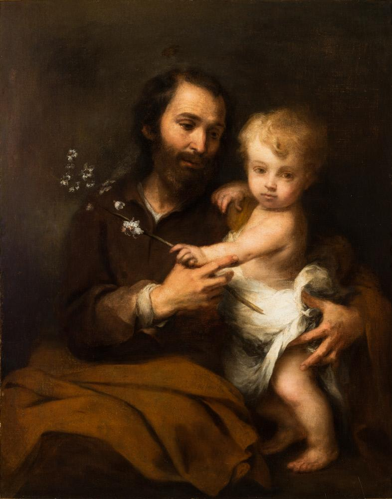
H. Jozef met het Kindje Jezus
Gebed tot de H. Jozef
Tot u, heilige Jozef, nemen wij onze toevlucht in onze nood. Nadat wij uw heilige Bruid om hulp hebben aangeroepen, smeken wij vol vertrouwen ook om uw bescherming. Om de liefde die u verbond met de onbevlekte Maagd en Moeder van God, en om de vaderlijke liefde waarmee gij het Kind Jezus in uw armen hebt gesloten, bidden wij u smekend: zie goedgunstig neer op het kostbare erfdeel dat Jezus Christus met Zijn Bloed heeft gekocht, en kom met uw macht onze nood te hulp. Zorgzame bewaarder van het Heilig Gezin, waak over allen die tot kinderen van God zijn uitverkoren, houd van ons verre, liefdevolle vader, elke dwaling en elke ondeugd. Sta ons, sterke beschermer, vanuit de hemel genadig bij in de strijd met de machten van de duisternis. En zoals gij eens het Kind Jezus uit het hoogste levensgevaar hebt gered, zo verdedig nu de heilige Kerk van God tegen haar vijanden en tegenstanders. Neem ons allen onder uw voortdurende bescherming, opdat wij naar uw voorbeeld en met uw hulp heilig leven, zalig sterven en de eeuwige zaligheid in de hemel verwerven. Amen. Paus Leo XIII
Gebed en lofprijzing
Ons gebed bezit een alles overtreffende waarde en een kracht, die alle fysieke krachten samen verre overtreft. De lichamelijke wezens en de geschapen geesten met al hun werken samen blijven op zonneafstanden achter bij de kracht en de waarde van één enkele daad van liefde tot God en wegen die niet op. Het gebed echter heeft de kracht ons de genade te verwerven waarmee wij deze daad van liefde verrichten. Daarom heeft het christelijk gebed een grotere betekenis en draagwijdte dan de meest verbazingwekkende ontdekkingen en de grootste talenten. Het is de grootmacht op aarde. Zo moeten wij leren denken over ons gebed.
Over de grote waarde van één enkele daad van liefde sprak Jezus tot de H. zuster M. Faustyna:
Mijn dochter, als u wist welke grote verdienste en welke waarde een zuivere daad van liefde tot Mij heeft, zou u van vreugde sterven. Ik zeg het daarom, opdat u zich onophoudelijk door de liefde met Mij verenigt, want dat is het levensdoel van uw ziel.14 Jezus tot de H. zuster Faustyna Kowalska
14 Tagebuch der hl. Schwester Maria Faustyna Kowalska, Hauteville/Zwitserland 2003, nr. 576.
Gebed en lofprijzing zijn de twee vleugels, waarmee onze ziel naar de hemel vliegt.
Lofprijzing vervult het hart met vreugde en verleent ons hele wezen een glans. Het is een geheim van het gezegende leven dat lofprijzing niet alleen zegen toevoegt, maar ook elke zegen van God vermeerdert. Wanneer u begint te loven, verdwijnt langzaam de onrust uit uw hart en de vrees uit uw ziel als mist voor de zon. Wanneer u begint te loven, wordt uw zorg in vreugde veranderd en wordt de vrede van uw ziel vermeerderd. Wanneer u begint te loven, verstomt het gemor en de kritiek, de adem van de hemel blaast de wolken weg, en u voelt zich weer rein en nieuw.
Lofprijzing legt de duivel een hinderlaag en verheft u boven de beschuldigingen van Satan. Wanneer u begint te loven, wendt Satan zich met schrik af en vlucht hij. De lofprijzing baant de Heilige Geest de weg in uw leven. De lofprijzing verandert uw bergen van moeilijkheden in heuvels van zegen. De lofprijzing van God vervult u met vreugde en vrede in het geloof. (Zie Rom 15,13)
De lofprijzing geeft u adelaarsvleugels, en met het oog van het geloof ziet u de overwinning al!
De heilige engelen van God, die voortdurend het aangezicht van de Hemelse Vader aanschouwen en in alle helderheid de wil van God voor ons leven herkennen, snellen toe om u te helpen bij het behalen van de overwinning.
Toen Paulus en Silas baden en God loofden, opende de Heer de gevangenisdeuren te Filippi. (Zie Hand 16,23-24)
Moge elke dag een dag van lofprijzing worden. Begin meteen 's morgens, wanneer u ontwaakt, de Heer te prijzen. Telkens wanneer u wordt verzocht te wanhopen, bang te zijn, u zorgen te maken, te kritiseren of aan enige verleiding toe te geven, begin dan God te prijzen. Loof, mijn ziel, de Heer! Een loflied voor de Heer, heel mijn leven, een psalm, tot het laatst voor mijn God. (Ps 146,1-2)
De lofprijzing is een vrucht van de verwonderde, dankende en aanbiddende liefde tot de Heer. Daarom kunnen wij zonder deze liefde, die ons door de Heilige Geest telkens opnieuw wordt geschonken, God nauwelijks loven. Wanneer wij de heilige engelen en heiligen uitnodigen om met ons God lief te hebben en te loven, schenken zij ons deel aan hun heerlijkheid en vervullen zij ons leven met de sfeer van de hemel.15
15 Zie Die Macht des Lobpreises, Missionswerk „Stimme des Glaubens“, Konstanz 1972, blz. 43–46.
Hoezeer de lofprijzing ons helpt van ons eigen kleine ik af te zien en ontvankelijk te worden voor de liefde van God, toont ons het volgende voorbeeld uit het leven van de H. Franciscus van Assisi:
Nadat deze serafijnse heilige in 1224 op de berg La Verna de wondmerken van Christus had ontvangen, schreef hij zijn grote „Lofprijzing aan de Allerhoogste”.
Deze lofprijzing is geheel op het Gij van God gericht, want Franciscus gaat het niet om zichzelf, maar uitsluitend om God. Hij wordt er niet moe van, God steeds weer met Gij aan te spreken. Gij, Gij bent, Gij, alleen Gij! Gij bent de almachtige Vader, Koning van de hemel en de aarde!
Broeder Leo, zijn biechtvader en vertrouwdste medebroeder, die met hem op de berg verbleef, werd in die tijd door zware verzoekingen gekweld. Door zijn neerslachtigheid en het gevoel door God verwaarloosd te zijn, viel hij steeds meer op zichzelf terug en werd hij steeds bedrukter. De H. Franciscus zag zijn nood, schreef zijn „Lofprijzing” en een bijzondere zegen voor broeder Leo met eigen hand neer en overhandigde hem dit kostbare geschrift met de woorden: Neem dit blad tot u en bewaar het zorgvuldig tot de dag van uw dood.
Daarop verdween onmiddellijk elk spoor van die verzoeking.
Het geschrift werd bewaard en verrichtte in de daaropvolgende tijd wonderen.16
16 Zie „Bruder Leo, schreibe …“ van Gottfried Egger OFM, St. Ottilien 2023, blz. 88, 96.
Geloofd zijt Gij, mijn Heer, door hen die vergiffenis schenken door Uw liefde, en ziekte en verdrukking dragen. Gelukkig zij die dat dragen in vrede, want door U, Allerhoogste, zullen zij worden gekroond. Uit het Zonnelied van de H. Franciscus
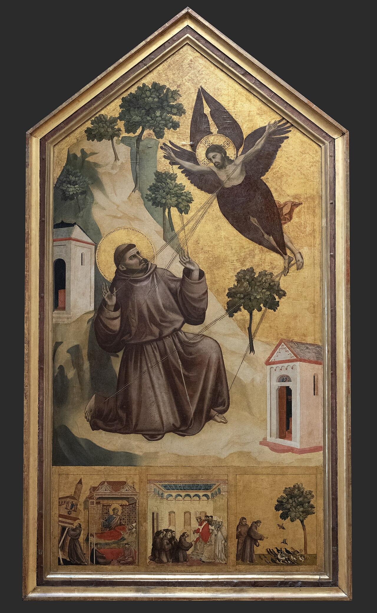
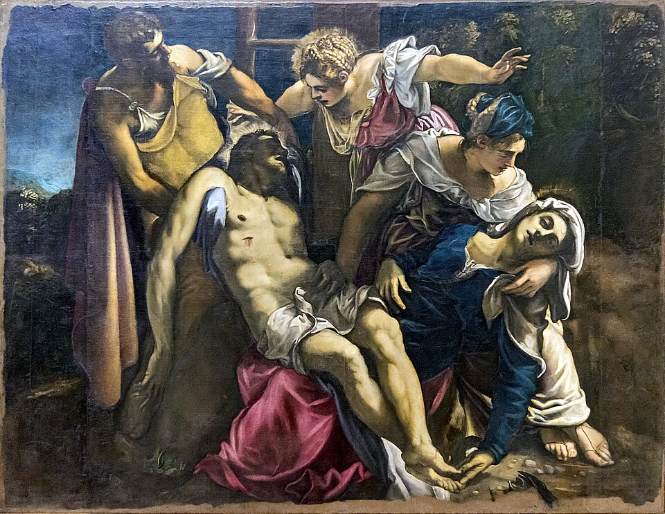
Kruisafneming van Christus
Dankt de Vader met vreugde!
Wanneer de H. Paulus ons oproept, de Hemelse Vader altijd dank te zeggen, dan doet hij dat omdat hij weet dat oprechte dank God hoogst welgevallig is en tegelijk ontelbare nieuwe geestelijke en lichamelijke weldaden over de dankbare ziel afroept. Bij de dankbaarheid voor alles wat de Hemelse Vader dag na dag schenkt, voegen zich vreugde en tevredenheid. Dankbaarheid, vreugde en tevredenheid zijn als het ware „zusters”, die graag samen door dit leven gaan en bij God en de mensen welgevallen vinden. Zelfs een mens die door zonden en zorgen verbitterd is, kan deze drie „zusters” op de duur niet weerstaan, wanneer hij hen op zijn weg tegenkomt, want deze „drie” zijn „aanstekelijk”.
Voor alles wat vreugdevol en mooi is, danken valt ons nog relatief gemakkelijk, maar hoe staat het met onze dank, wanneer God ons door kruis en lijden op de proef stelt en onze gebedswensen schijnbaar niet verhoort?
Tot de H. Mirjam van Abellin, die door ontelbaar veel lijden en vervolgingen werd getroffen, sprak eens de Moeder Gods: Mirjam, wees altijd tevreden met uw lot, ook al moet u lijden. De goede God zal u altijd het nodige zenden.
De H. Lodewijk Maria Grignion de Montfort zegt: Wie zal het ooit verklaren, wie zal het ooit kunnen bevatten, welke eeuwige schat van glorie één enkel ogenblik van een gewillig gedragen kruis in ons teweegbrengt?
Het kruis blijft geen mens op deze wereld bespaard, want het kruis is de brug die ons over de afgrond van deze wereld naar de hemel voert.
Door het kruis wil God hen die Hem niet liefhebben, tot Zich trekken, hen die Hem niet genoeg liefhebben, dichter tot Zich trekken, en hen die Hem liefhebben, volledig met Zich verenigen.
Wanneer ook wij de raad van de Moeder Gods aan de H. Mirjam opvolgen en steeds tevreden zijn, door ja te zeggen tegen de goddelijke wil en al Zijn toelatingen met een dankbaar „fiat”, dan zal God alle situaties van ons leven ten goede leiden. (Zie Rom 8,28)
Wij kunnen ons niet voorstellen welke grote vreugde en eer wij de Hemelse Vader bewijzen, wanneer wij met kinderlijk vertrouwen ons leven, ons bidden en ons offeren aan Zijn goedertieren vaderzorg overgeven.
Toen de H. Gertrudis eens aan Jezus de vraag stelde, waarom Hij niet alle gebeden verhoort, gaf Hij haar het volgende antwoord: Geliefde dochter, wanneer Ik uw gebeden en wensen soms niet verhoor, geschiedt dat alleen om u te gelegener tijd nog meer te schenken. In uw menselijke zwakheid kunt u niet erkennen wat voor u het voordeligst is.
Wanneer wij God in onze menselijke kortzichtigheid om een „schorpioen” vragen, zal Hij ons die wens zeker niet vervullen, want Hij zal ons niets geven wat ons tot schade is. Maar zoals het katholieke geloof leert, mogen wij er volkomen zeker van zijn dat elk gebed, hoe klein ook, door onze beschermengel tot de troon van God wordt gedragen en als genaderegen verandert en op ons en op allen voor wie wij bidden, terugvalt.
Zegt altijd voor alles dank aan God de Vader in de naam van onze Heer Jezus Christus. Ef 5,20
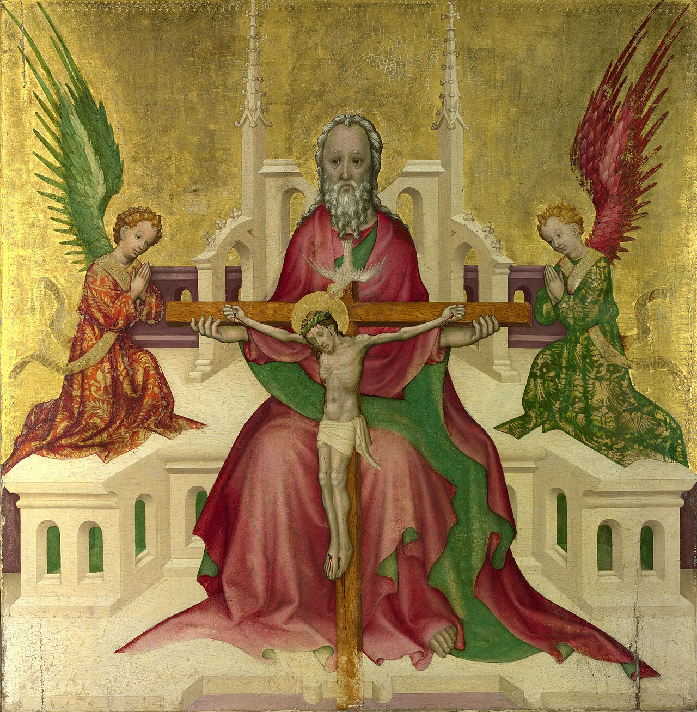
De Hemelse Vader vóór de kruisiging (genadestoel)
Gebeden tot de Hemelse Vader
Mijn Vader
Mijn Vader, ik laat mij aan U over. Doe met mij wat U behaagt. Wat U ook met mij doet, ik dank U. Tot alles ben ik bereid, alles aanvaard ik, als Uw wil maar geschiedt in mij en in al Uw schepselen; niets anders verlang ik, mijn God. In Uw handen leg ik mijn ziel. Ik geef haar aan U, mijn God, met heel de liefde van mijn hart, omdat ik U bemin en omdat deze liefde mij ertoe drijft mij aan U te geven, mij in Uw handen te leggen zonder maat, met een grenzeloos vertrouwen, want Gij zijt mijn Vader. H. Charles de Foucauld
Goddelijke Vader
Goddelijke Vader, vervul mij geheel met Uw liefde! Laat mij Uw gedwee kind zijn, in wie Uw vaderlijk plan kan worden verwezenlijkt. Maak mij leerzaam in het begrijpen en aanvaarden van alle openbaringen van Uw Goddelijke Liefde. Amen. Moeder Eugenia E. Ravasio
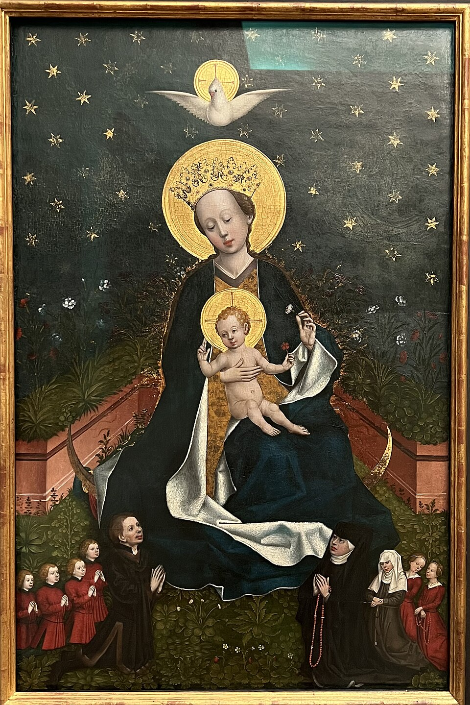
Maria met het Kindje Jezus in de sterrenhemel
De Onze-Vadernoveen
Onze Vader die in de hemel zijt!
Ik roep tot U, Hemelse Vader, ontferm U over mij en over alle mensen op aarde die van goede wil zijn. Laat ons allen steeds meer inzien dat wij geroepen zijn U in deze wereld lief te hebben en U te dienen, om eens deel te mogen hebben aan Uw eeuwige heerlijkheid.
Uw naam worde geheiligd!
Zoals Uw Zoon Jezus verlang ik vurig dat Uw naam overal wordt geprezen en geëerd.
Uw rijk kome!
Moge Uw rijk de hele mensheid steeds meer vervullen: groeien, bloeien en rijke vrucht dragen in de harten van Uw zonen en dochters op aarde.
Uw wil geschiede op aarde zoals in de hemel!
Laat de mensen steeds dieper begrijpen dat ware vrede en geluk alleen te vinden zijn in de volkomen vervulling van Uw wil, in het onderhouden van Uw geboden.
Geef ons heden ons dagelijks brood!
Vader van erbarmen, schenk Uw kinderen over de hele wereld het nodige voedsel voor ziel en lichaam. Laat ons steeds meer inzien hoe heilbrengend de dagelijks waardig ontvangen Heilige Communie is.
En vergeef ons onze schulden, zoals ook wij vergeven aan onze schuldenaren!
Goede Vader, ik offer U ter genoegdoening voor mijn zonden en die van alle mensen, voor onverschilligheden en tekortkomingen het bloed, de wonden, het lijden en de verdiensten van Uw Zoon Jezus op. Aanvaard Zijn grote liefde als vergoeding voor onze gebrekkige liefde tot God, de naaste en de vijand.
En breng ons niet in beproeving, maar verlos ons van het kwade!
Barmhartige Vader, houd de boze geest, de wereld en haar list en de „naaste gelegenheid” van ons verwijderd, opdat ik en allen die U dierbaar zijn, in Uw genade en in Uw vrede mogen leven en U mogen dienen. Zend Uw heilige engelen op voorspraak van hun Koningin ons ter bescherming en zegen ons. Amen.17
17 Imprimatur: Aartsbisschoppelijk Secretariaat Salzburg, 20.2.1985.
Vader, verheerlijk uw Naam! Joh 12,28
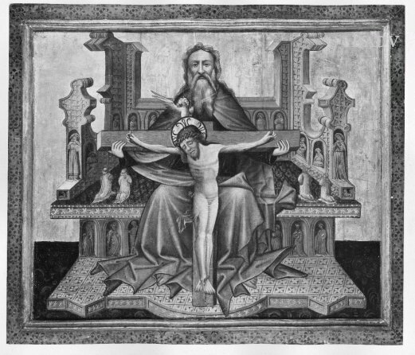
De Hemelse Vader bij de kruisiging (genadestoel)
God is mijn Vader
Mijn Vader in de hemel, hoe weldadig en heilzaam is het voor mij te weten: U bent mijn Vader, en ik ben Uw kind.
Vooral wanneer het donker is in mijn ziel en mijn kruis zwaar wordt, heb ik de behoefte U steeds weer te zeggen: „Vader, ik geloof in Uw liefde voor mij.”
Ja, ik geloof dat U op elk ogenblik van mijn leven Vader bent en dat ik Uw kind ben. (…)
Ik geloof! Maar versterk in mij het geloof, de hoop en de liefde. Leer mij in alle gebeurtenissen van mijn leven steeds Uw liefde als gids te zien. Leer mij, als een kind in de armen van zijn moeder, mij geheel aan U over te laten. Vader, U weet alles, en U ziet alles. U kent mij beter dan ik mijzelf ken. U vermag alles en U bemint mij.
Mijn Vader, omdat U wilt dat wij met vertrouwen tot U komen, kom ik om U met Jezus en Maria te bidden … Verenigd met hun Heiligste Harten breng ik U in deze bede al mijn gebeden, offers en versterving ten geschenke, heel mijn handelen en een grotere trouw in de vervulling van mijn plichten.18 Schenk mij het licht, de kracht en de genade van de Heilige Geest. Versterk mij in deze Geest, zodat ik Hem nooit verlies en Hem noch bedroef noch in mij verzwak. (…)
Goddelijke Vader, liefdevolle hoop van onze zielen, moogt Gij door alle mensen worden gekend, geëerd en bemind.
Goddelijke Vader, oneindige goedheid die zich over alle volken uitstort, moogt Gij door alle mensen worden gekend, geëerd en bemind.
Goddelijke Vader, levendmakende dauw van de mensheid, moogt Gij door alle mensen worden gekend, geëerd en bemind. Amen.19
Moeder Eugenia E. Ravasio
18 Bidt men dit gebed als noveen, dan moet worden toegevoegd: „Ik beloof U, vooral tijdens deze negen dagen bij een bepaalde gelegenheid … of tegenover een bepaald persoon … edelmoediger te zijn.”
19 Imprimatur: Jean Kard. Verdier, aartsbisschop van Parijs, 8 mei 1936. De Vader schenkt vele genaden op de voorspraak van Moeder Eugenia door het gebed God is mijn Vader, dat Hij haar zelf heeft gegeven, bijzonder voor de gezinnen, in elke nood van de gezinnen. Moeder Eugenia zei dat zelfs al de titel van het gebed God is mijn Vader een volledig gebed is. Zij raadde ons aan dit overdag vaak te herhalen: God is mijn Vader, want zij benadrukte dat de Vader zeer tevreden en verheugd is over Zijn kind dat Hem liefdevol Mijn Vader noemt.
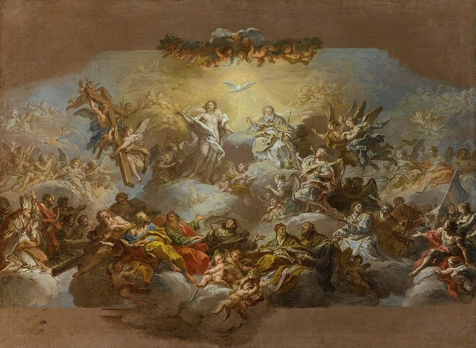
De Heiligste Drievuldigheid, omringd door heiligen (schets van Sebastiano Conca)
Genezingsgebed
Vader, ik loof en prijs Uw goedheid en Uw liefde. Ik bid U in de naam van Jezus, Uw innig beminde Zoon, dat Gij mij Uw Heilige Geest zendt met al Zijn vruchten en gaven.
Heilig met Uw tegenwoordigheid mijn lichaam en mijn ziel. Schenk mij een sterk geloof in U en in Uw Woord.
Geef mij de genade U met heel mijn hart lief te hebben en U in mijn leven op de eerste plaats te stellen, doordat ik al mijn afgoden, verslavingen, zonden en gehechtheden afzweer.
In Uw oneindige barmhartigheid, heb erbarmen met mij, arme zondaar, en vergeef mij mijn schuld.
Ook ik vergeef met heel mijn hart allen die mij in mijn leven hebben beledigd (N.N.).
Bevrijd mij van alle hinderlagen en aanvallen van de boze vijand. Hij moge geen macht over mij hebben. Bevrijd mij van alle verleidingen van de wereld, die mij van U en Uw wil wegvoeren. Bevrijd mij van alle zwakheden van het vlees, die mij tot zonde drijven.
Genees mijn lichaam van alle ziekten en mijn geest van alle nood, droefheid en verwarring. Gij weet wat ik sinds de dag van mijn ontvangenis in de schoot van mijn moeder aan negatiefs heb ervaren.
Heilige Vader, met de genade van de Heilige Geest genees mijn hart van alle verwondingen, vooral van die welke voortkomen uit afwijzing, eenzaamheid, gebrek aan liefde, haat, afgunst, onverschilligheid of boosheid van de mensen.
Geef mij een nieuw hart, gelijk aan het Hart van Jezus, zachtmoedig en nederig, vol vreugde en vrede en overstromend van liefde.
Vandaag wil ik een nieuw leven beginnen en U in alles de eer geven, in alles wat ik denk, zeg en onderneem. Op deze pelgrimstocht naar U wil ik door Maria, mijn lieve Moeder, begeleid worden en door al Uw engelen en heiligen. Amen.
Pe. Sousa-Lara, Gebed van de Kapucijnessen van de Eeuwige Aanbidding
God, herschep mijn hart, maak het zuiver, geef mijn geest, diep in mij, nieuw bestand. Ps 51,12
Vader, lieve goede Vader
Vader, lieve goede Vader,
innig smeek ik tot U:
Gij mijn God en Gij mijn Alles,
neig U neer tot mij!
Niet in woorden kan ik vatten,
wat heel mijn wezen vervult.
Zie en lees in mijn hart,
wat Gij zelf daarin schreef!
Zie, hoe vurig ik verlang,
U diep en trouw te beminnen.
Eén zorg slechts te kennen:
dat mijn wandel U verheugt!
Dat ik Uw heilige wil
altijd helder erken,
en hem vreugdevol te vervullen,
van harte steeds bereid zij!
Vader, neig U neder,
zie, hoe ik met kinderzin,
de diepste diepten van mijn wezen,
biddend voor U uitspreid!
Zie, hoe ik zo graag zou willen,
in Uw genade recht staan,
opdat ik Uw zegenrijkdom
voor alle mensen kon afsmeken!
Dat Uw rijk zich hier ontplooie,
vrede worde in onze tijd,
en dat Uw priesters weerspiegelen
Christus’ liefde en heiligheid!
O, hoe wou ik voor Uw eer
gloeien en mij verteren,
dat alle mensenkinderen
zich voor Uw liefde openen!
Vader, lieve goede Vader,
neig U neer van hemelhoogte.
Hoor uit het verlangen van mijn hart
het smeken van Uw eigen liefde!
Zie, hoe ik nog zo vaak tekortschiet,
hoe ik strijd, dag na dag,
en de trouw, zo vurig begeerd,
mij toch niet gelukken wil!
Kom Uw kind te hulp,
geef mij wat Gij van mij wilt!
Geef het mij om Jezus’ wil,
door Maria smeek ik U!
Gij gaf mij het willen,
werk nu ook het volbrengen.
Laat mij gloeien in liefde en verlangen
tot de laatste levensadem!
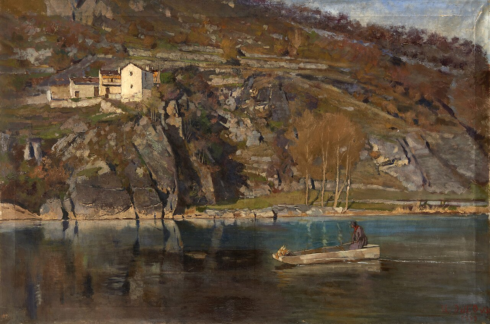
Rivier de Adda in Lombardije (schilderij van Uberto Dell'Orto)
Zie, hoe het water van de Adda komt en verder stroomt … Bleef het staan, dan ontstond een stinkende poel. Zo is het ook met je lijden, je tranen en je strijd: zij komen en gaan. Pas goed op dat je ze niet vasthoudt. Alles vergaat. Geef alles aan God over … Kijk niet naar de persoon die je leed aanbrengt, maar aanvaard het uit Zijn hand. Niets gebeurt toevallig. God begeleidt Zijn schepselen stap voor stap. Hij meent het zeker goed met ons, ook al begrijpen wij niet elk waarom. Laat je niet ontmoedigen, ga altijd vooruit en wacht tot het lijden voorbij is. Uit de onderrichtingen die Moeder Eugenia als kind van haar diep gelovige grootvader ontving
De geest die gij ontvangen hebt, is er niet een van slaafsheid, die u opnieuw vrees zou aanjagen. Gij hebt een geest van kindschap ontvangen, die ons doet uitroepen: Abba, Vader! Rom 8,15